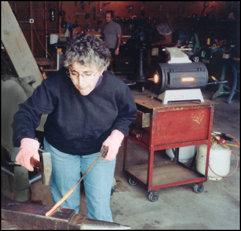
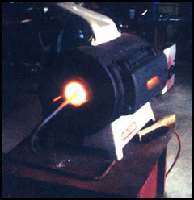
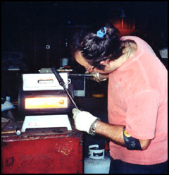
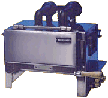

 
|
My own favorite Ladysmith and my Goodwife, Patty Smoot, is caught torturing
a hot mild steel rod on a Peter Wright anvil - and yes, those are pink leather
Lady-gloves she is wearing. In the background is the
Pro-Forge and two propane tanks.
The next image shows the side ports of the forge.
Side ports are a necessity in doing blacksmithing. The last image shows Adam Clark with the
front door of the forge open. Adam is our teacher,
mentor, and friend. He is a master metalsmith although he won’t admit it -
and yes, that is a pink shirt Adam is wearing. These small portable propane fueled gas forges are much used by modern day farriers and many blacksmiths. These propane type forges are made by Forgemaster, NC Tool, and others. Many farrier supply houses stock gas forges. |

A Forgemaster